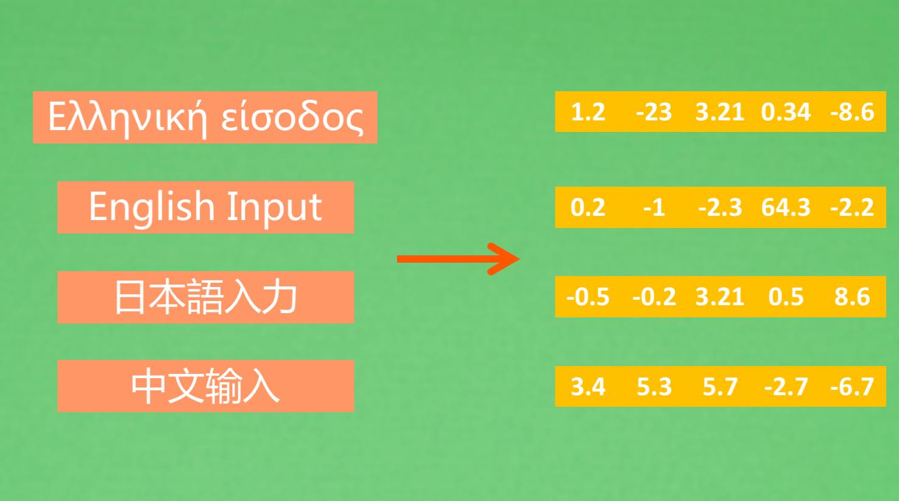
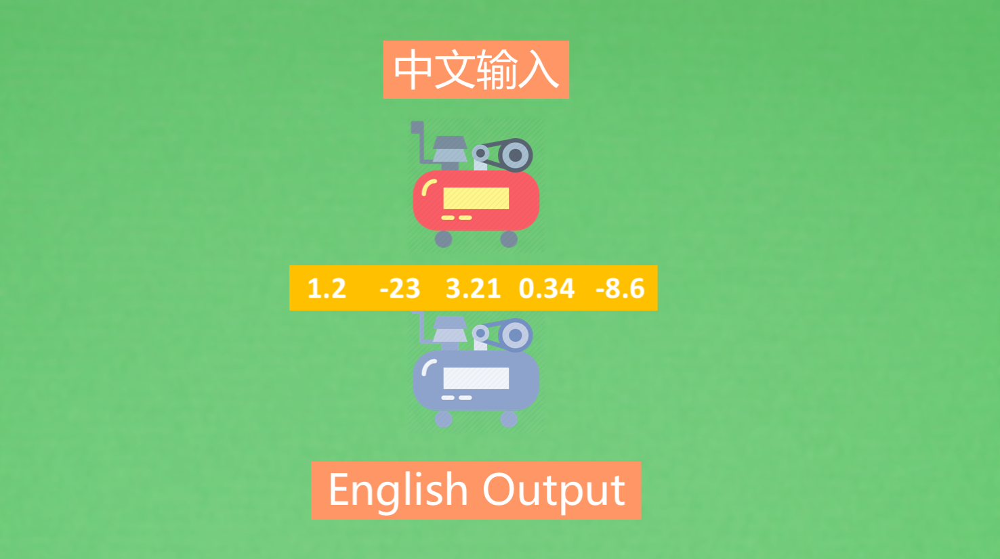
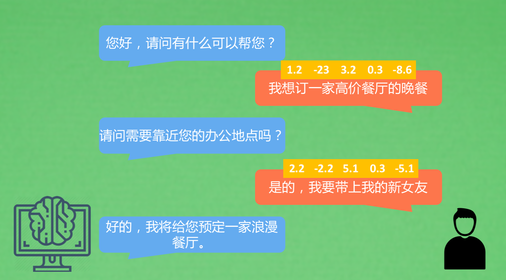

理解句子
理解形式


- 我们需要找到一种方式将我们熟知的中文，英文和各种外文转化成数字形式。自然语言处理中有一个典型的应用，就是翻译。
- 将一种语言作为输入，一种作为输出，使用NLP作为中间的桥梁，首先将中文通过一种压缩机制转码成机器能理解的数字，然后用中间这种数字化的语言表达形式，再通过一次英文的解压，解压出来英文作为输出语言。
对话

- 当和计算机对话，计算机在收到你的语言信息后，会翻译成它能理解的数字内容，然后使用这些数字语言，通过一些处理分析，做出行为决策，最终返回人类的语言。一来一回，形成对话，解决具体问题。